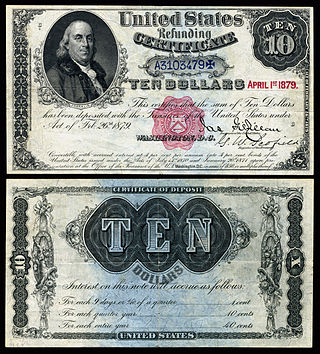

- Main page
- Contents
- Featured content
- Current events
- Random article
- Donate to Wikipedia
- Wikipedia store
Welcome to Wikipedia,
the free encyclopedia that anyone can edit.
5,160,824 articles in English
- Arts
- Biography
- Geography
- History
- Mathematics
- Science
- Society
- Technology
- All portals
From today's featured article

Paul Collingwood (born 26 May 1976) was until 2011 a regular member of the England Test cricket team. He is a batting all-rounder, and a medium-pace bowler. His 206 during the 2006–07 Ashes series was the first double century by an England batsman in Australia for 78 years.
Did you know...
- ... that Rathika Ramasamy's wildlife photographs (example pictured) were exhibited at the Clean Ganga Campaign held at the India International Centre in September 2005?
- ... that 1–13 Arundel Terrace in Brighton consists entirely of Grade I listed buildings?
- ... that current Liga de Fútbol Profesional president Javier Tebas is a Real Madrid supporter?
- ... that members of the Welsh churches Holy Trinity Church, Sarn, St Nicholas' Church, Church Stoke, and St Andrew's Church, Presteigne all voted against joining the Church in Wales in order to stay with the Church of England?
- ... that in May 1926 investigator Rose Mackenberg testified before Congress about fraudulent mediums with her mentor, Harry Houdini?
In the news
- Binali Yıldırım (pictured) is appointed Prime Minister of Turkey following the resignation of Ahmet Davutoğlu.
- In the Tajikistani constitutional referendum, voters approve the removal of term limits of incumbent President Emomali Rahmon.
- Independent Green Alexander Van der Bellen is narrowly elected President of Austria.
- Cyclone Roanu kills at least 90 people and leaves more than 130 missing across Bangladesh and Sri Lanka.
- Austrian Federal Railways CEO Christian Kern succeeds Werner Faymann as Chancellor of Austria.
On this day...
May 26: Corpus Christi (various Western Christian churches, 2016); Lag BaOmer (Judaism, 2016); National Sorry Day in Australia; Independence Day in Georgia (1918)
- 451 – Armenian rebels were defeated by forces of the Sassanid Empire on the Avarayr Plain in Vaspurakan, but the loss played a major factor in their being granted religious freedom 33 years later.
- 1637 – Pequot War: An allied Puritan and Mohegan force attacked a fortified Pequot village in the Connecticut Colony, killing 500 people.
- 1822 – The deadliest fire in Norwegian history took place at a church in Grue, Norway, with at least 113 deaths.
- 1906 – Vauxhall Bridge (pictured) in London opened, crossing the River Thames between Vauxhall and Westminster.
- 1991 – Lauda Air Flight 004 experienced an uncommanded thrust reverser deployment of an engine and broke apart in mid-air, killing all 223 people on board.
Today's featured picture
Refunding Certificates were banknotes issued by the United States Treasury in 1879 which originally promised to pay 4% annual interest in perpetuity. Depicting Benjamin Franklin, they were issued only in the $10 denomination. The issuance of these certificates reflects the end of a coin-hoarding period that began during the American Civil War, and represented a return to public confidence in paper money.